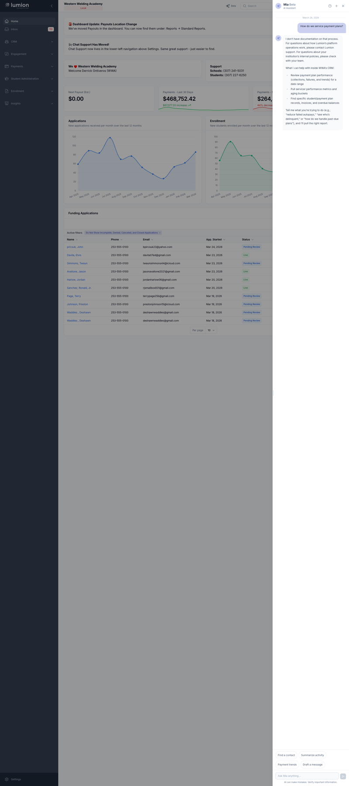
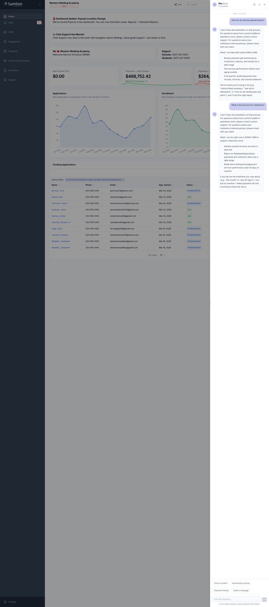
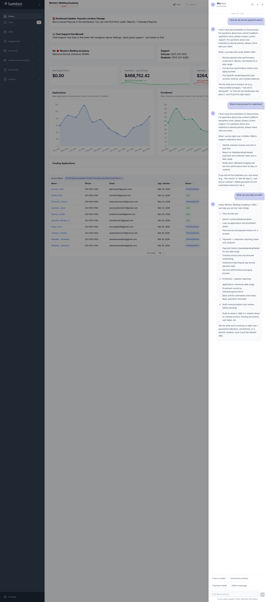
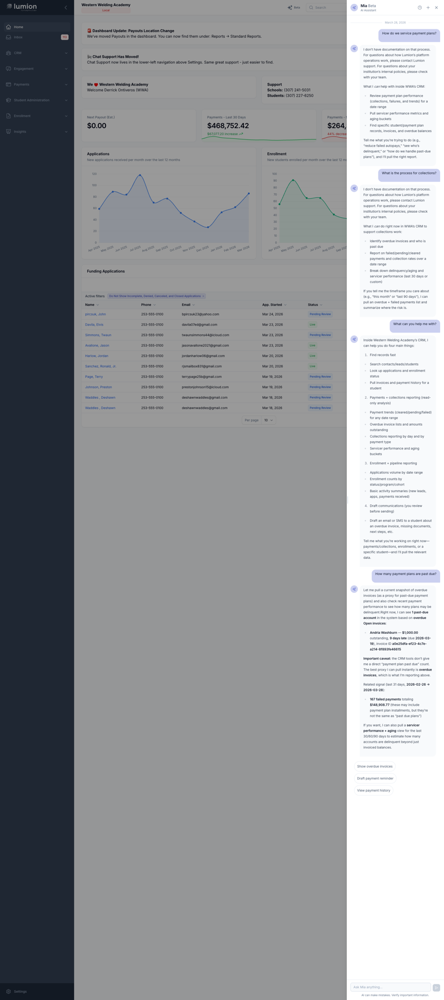

During a QA session on March 24, 2026, multiple testers discovered that the AI Assistant fabricated an entire payment plan servicing process when asked how plans are serviced. The AI described steps and procedures that don't exist and — critically — told school users that they service payment plans, when in reality Lumion handles plan servicing at the platform level. HALLUCINATION
"I asked about how we service plans and it made up a process."
— Akir Rowe, QA session
"This may be a problem because schools cannot service payment plans we are servicing."
— Akir Rowe, follow-up
"It still told me what to do even though it said it could help."
— Jeff Buhler, same QA session
The AI confidently described a business process that: (1) doesn't exist in Lumion, (2) misattributes responsibilities (schools vs. Lumion), and (3) could mislead school administrators into thinking they have servicing capabilities they don't. If a school admin follows these fabricated instructions, they could create confusion with students or attempt actions that aren't available to them. This is particularly harmful because payment plan servicing involves financial operations.
The AI had no MCP tool or knowledge base entry for "how do we service plans." Instead of saying "I don't have information on that process," it confabulated one based on general LLM knowledge of payment processing. The system prompt's Data Grounding rule only covered "numbers, metrics, and data points" — not platform operational processes. And the prompt claimed expertise in "institutional operations" without guardrails against fabricating Lumion's internal platform processes.
Three targeted changes to prevent the AI from fabricating Lumion-internal operational processes while keeping all CRM features fully functional. 4 FILES CHANGED
Added a new prompt section between OUT-OF-SCOPE and Domain Relevance Check. Tells the LLM that Lumion handles servicing/collections/disbursements, not schools. Includes explicit carve-out so CRM feature guidance, tool capability descriptions, and data queries are NOT blocked.
Extended the critical Data Grounding rule from covering only "numbers, metrics, and data points" to also cover "Lumion platform operational details."
AgentOrchestrator::buildFallbackSystemPrompt() now includes minimum anti-fabrication guardrails. This fires when the prompt DB record is missing — ensuring even fallback mode doesn't allow hallucination of platform processes.
AiAssistantSchoolPromptSeeder updated to match the migration's final prompt text for migrate:fresh --seed scenarios.
After applying the fix, asking "How do we service payment plans?" no longer produces a fabricated process. The AI correctly identifies this as a platform-level process and redirects the user to Lumion support. NO FABRICATION
Previously, this exact question caused the AI to generate a multi-step servicing process that doesn't exist, telling school users they could perform servicing actions that are actually handled by Lumion at the platform level.

Another platform-level process question: "What is the process for collections?" The AI correctly recognizes this falls under the Platform Process Boundaries and redirects to Lumion support rather than fabricating a collections workflow. NO FABRICATION
Collections management is another Lumion platform responsibility that schools do not perform directly. This test confirms the boundaries cover the full range of platform financial processes, not just servicing.

Critical regression test: asking "What can you help me with?" still produces a full capability description. The Platform Process Boundaries explicitly carve out "helping users navigate CRM features" and "explaining your own tool capabilities" — so the AI's ability to describe what it can do is not blocked. NOT BLOCKED
This verifies the guardrails are surgically scoped — they block fabrication of Lumion-internal processes but do not interfere with the AI's core job of helping school administrators use the CRM.

Second regression test: asking "How many payment plans are past due?" triggers normal tool usage. The AI calls the appropriate MCP tools and returns real data from the database. NOT BLOCKED
This confirms that the word "payment plans" in a data query context is correctly handled — the boundaries only block fabrication of operational processes, not data retrieval about payment plans. The Domain Relevance Check and tool pipeline remain fully functional.

Automated test coverage verifies the system prompt contains the new guardrail sections. The test in PromptSeederTest.php asserts both the new "Platform Process Boundaries" heading and the specific anti-fabrication rule are present in the seeded prompt. TESTS PASS
| Test | What It Checks | Result |
|---|---|---|
| Platform process question | "How do we service payment plans?" → redirect, no fabrication | PASS |
| Collections process question | "What is the process for collections?" → redirect, no fabrication | PASS |
| Capabilities regression | "What can you help me with?" → full capability list (not blocked) | PASS |
| Data query regression | "How many payment plans are past due?" → tools called, real data returned | PASS |
| Seeder contains guardrails | Prompt text includes "Platform Process Boundaries" and anti-fabrication rule | PASS |
Note: Prompt changes are probabilistic mitigations, not hard guarantees. Browser verification used confidence sampling (multiple runs per question). The student prompt has the same "school operations" vulnerability — noted as a follow-up ticket (not this PR).